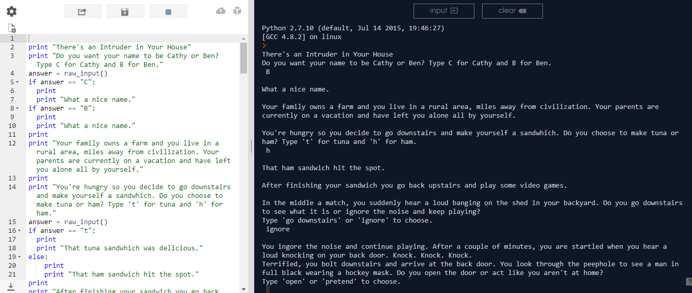

There's an intruder in your house interactive story
This is the interactive story that my parter, Brett, and I made with repl.it. You can follow along with the story by making decisions. We hope you find it interesting! Here is the link to the story: https://repl.it/Nbho/30
